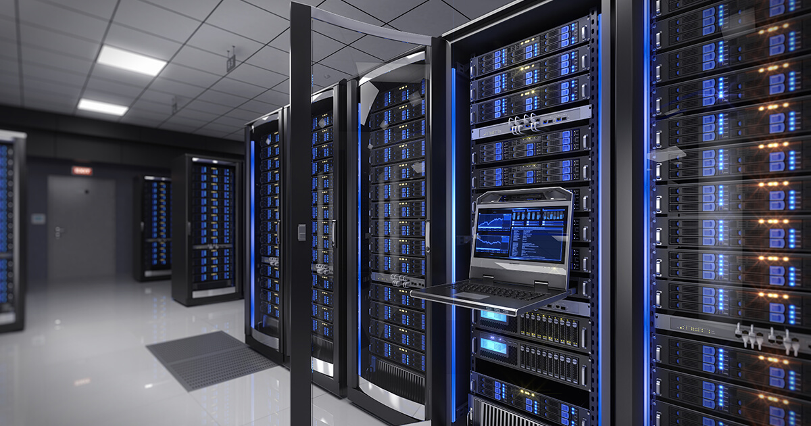

RAID (Redundant Array of Independent Disks) es una tecnología de almacenamiento que combina múltiples discos duros para mejorar la confiabilidad,
el rendimiento y la capacidad de recuperación de datos en sistemas informáticos. A través de la distribución de datos en varios discos, RAID ofrece
redundancia y, en algunos casos, permite la recuperación de datos en caso de fallo de un disco.
Conclusion:
las matrices de discos redundantes (RAID) son una tecnología esencial en el campo del almacenamiento de datos. Proporcionan redundancia, rendimiento
y/o capacidades de recuperación que son fundamentales para garantizar la integridad y la disponibilidad de los datos en sistemas críticos.
<
Diapositivas Resumen Curso
Arquitectura de Computadoras: Un programa educativo que se centra en el estudio de los principios fundamentales que subyacen a la
construcción y operación de las computadoras.
Computadoras
La importancia de una computadora radica en su versatilidad y capacidad para realizar una amplia gama de tareas en la sociedad moderna. Las computadoras son fundamentales en:
1. Comunicación: Permiten la comunicación instantánea a través de Internet, correo electrónico, redes sociales y aplicaciones de mensajería.
2. Trabajo y educación: Facilitan la productividad en el trabajo y el acceso a la información educativa. Se utilizan para la creación de documentos, presentaciones, investigación y aprendizaje en línea.
3. Entretenimiento: Ofrecen acceso a juegos, películas, música y contenido multimedia.
4. Automatización: Controlan sistemas y dispositivos en la automatización industrial, el hogar inteligente y la robótica.
5. Almacenamiento de datos: Permiten el almacenamiento seguro y eficiente de grandes cantidades de información.
6. Análisis y procesamiento de datos: Son esenciales en la investigación científica, análisis de datos, modelado y simulación.
7. Navegación y ubicación: Proporcionan sistemas de navegación GPS y mapas digitales.
En resumen, las computadoras son herramientas esenciales en la vida cotidiana y en casi todas las industrias, ya que mejoran la eficiencia, la comunicación y
la capacidad de procesar información, lo que impulsa el progreso en la sociedad actual.